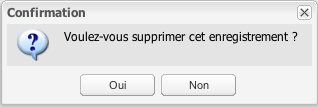

Les icônes
L'application permet de personnaliser une sélection d'icônes utilisées par les thèmes et donc les enregistrements.

### Un clic sur l'icône d'ajout ouvre une boîte de dialogue :

Il faut sélectionner deux fichiers au format PNG d'une taille de 32 pixels par 37 pixels. Et cliquer sur Envoyer.
### La suppression se fait par le bouton du même nom :

### Après une édition, il est nécessaire de rafraîchir le cache du navigateur (Ctrl ou Commande + R) pour prendre en compte les modifications dans l'onglet Thèmes.